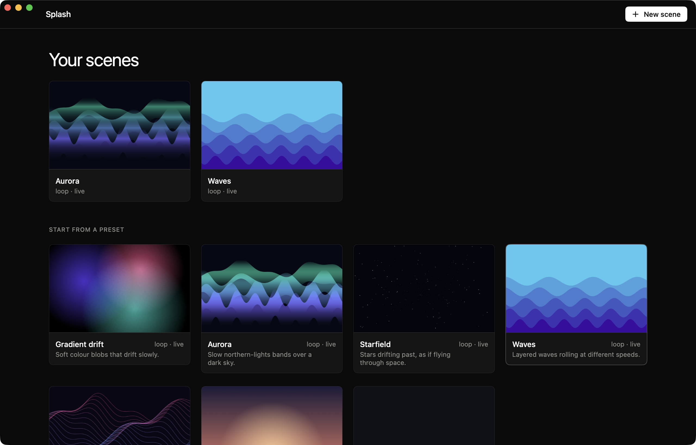
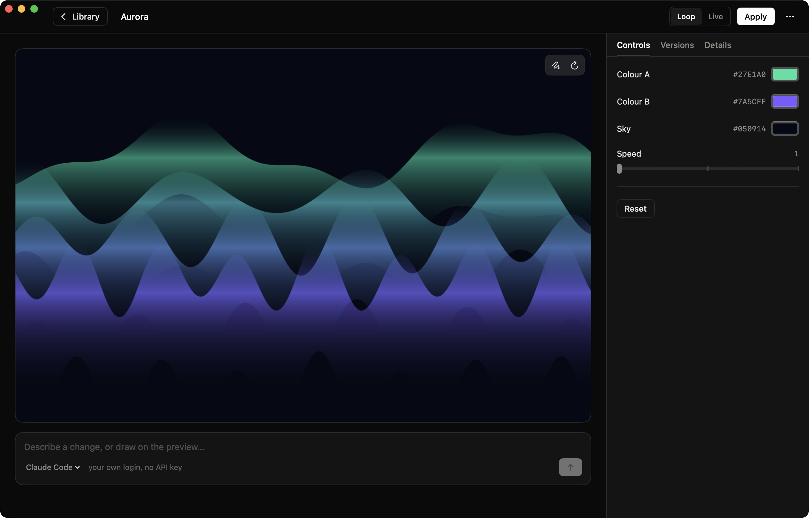

Splash
Animated wallpapers for macOS. Pick a preset, tune it, or describe it to the AI agent you already use.
Download View on GitHubInteractive preview: pick a scene and change its colours. This is the real scene code, running in your browser. In the app it is your wallpaper.
What is it?
Splash is a free and open-source app that puts animated and procedural wallpapers on your Mac. A wallpaper is a small folder with a web page and a few controls: start from a preset, change it, or describe what you want to an AI agent you already use. It runs in a tiny background process, so you forget it is there.
Alpha Splash is in early development. Expect rough edges and breaking changes between versions.
Features
Three ways onto the desktop
Still (one picture, nothing runs), Loop (a recorded video, played by the system) or Live (drawn in real time). Splash uses the lightest one the scene allows.
Presets and controls
Aurora, waves, stars, ribbons, soft gradients and a dusk. Change colours and speed with live controls, and see it in a large preview.
AI, with your own agent
Describe a change in words. Splash runs the agent CLI you are already signed in to (Claude Code today), in the scene's folder. No API key.
Draw, comment, attach
Draw on the preview and pin comments, or drop in images, SVGs and videos: to use in the scene, like a character, or as a reference. The agent changes only what you pointed at.
Versions you can go back to
A version is saved before every AI change, so any change can be undone.
Light on battery
It pauses when covered, when the screen sleeps or locks, on Low Power Mode and when the Mac is hot, and lowers its frame rate on battery.
Your own wallpaper stays safe
Splash remembers the wallpaper you had and can put it back. A picture of the scene is also set as the real wallpaper, so Mission Control and new displays match.
Updates in one click
When a new version is out, one button downloads it, checks it and restarts the app, keeping your permissions.
Command line
splash makes pictures and loops, checks a scene and asks an agent from a terminal, with the same engine as the app.
Reviews
What people who use Splash say, in their own words. Every review is written with a GitHub account and is tied to the version it is about.
Used it? Tell others.
Sign in with GitHub, give 1 to 5 stars and a few words. It takes a minute.
Write a reviewEvery review is a public GitHub issue from a real account (at least two weeks old), one per person per version. Negative reviews stay: only spam and abuse are removed. The maintainer's own reviews are not counted.
Light on your Mac
Splash stays out of the way. Measured once on a MacBook Pro (Apple silicon, macOS 26), with a simple scene at 30 fps:
One machine, one run, a debug build; system decoders and the GPU are not counted. A live scene is about 7 % of one core with its web processes, which is why a loop or a still is the default. You can measure it on your own Mac with scripts/benchmark.sh; the details are in the README.
Presets
Every preset is a normal scene: copy it, change it with the controls, or hand it to an agent.
The app


Install
Requires macOS 14 or later. Download the latest build from the Releases page, open the DMG and drag Splash to Applications. Then follow the first launch guide below: macOS will block the app the first time.
With Homebrew, one command (it also skips the first-launch warning):
brew install --cask Peppe37/tap/splashPrefer building it yourself? Install xcodegen, run xcodegen generate and open Splash.xcodeproj, or run swift build. See the README.
First launch: allowing the app
Splash is not notarized by Apple yet (that requires a paid developer account), so macOS shows a warning saying it cannot verify the app. This is expected. Here is how to open it:
- Open Splash from Applications. A message says it could not be opened. Click Done (do not click “Move to Trash”).
- Open System Settings → Privacy & Security.
- Scroll down to the Security section. You will see “Splash.app was blocked”. Click Open Anyway.
- Confirm with your password or Touch ID, then click Open. You only need to do this once.
Prefer the Terminal? This removes the quarantine flag and does the same thing:
xattr -dr com.apple.quarantine /Applications/Splash.appWhy trust it? Splash is fully open source: you can read every line of code in the repository, or build the app yourself with Xcode and skip this warning altogether. The release is built automatically by GitHub Actions from the tagged source.
Questions
macOS says it can't verify the app
Does it use my AI API key?
Will it drain my battery?
Does it replace my current wallpaper?
Why is a moving wallpaper a window?
What does it do with my data?
How do I update?
brew upgrade --cask splash.Is it really free?
Support & community
Splash is a free project made by one person. Here is how to get help, and how you can help it grow.
Ask or share an idea
Questions and ideas in GitHub Discussions.
Report a bug
Something broken? Open an issue, it takes a minute.
Contribute
Code, scenes, translations: start from the contributing guide.
⭐ Star on GitHub
The easiest way to help others find it. Tell a friend too.
Support the project
If Splash is useful to you, you can help keep it going. It pays for the time behind the project, and for the Apple Developer Program, which is what it takes to ship notarized builds with no warning at first launch.